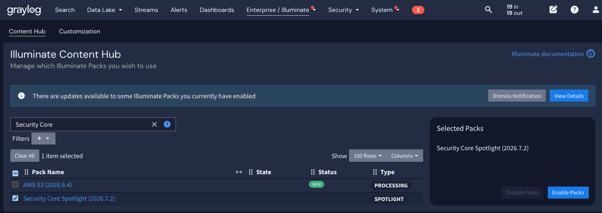

To install Graylog Security Core, follow the standard installation process for all content, as found in the Content Hub documentation.
| Security Core Version | Graylog Version | Illuminate Version | GIM Version |
|---|---|---|---|
| 1.0 | 7.0.5 | 7.0.5 | TBD |
Warning: Graylog Security Core is not designed to be backwards compatible, and new versions will only be compatible with the current version of Graylog and the Graylog Information Model at the time of a pack upgrade.
To locate Security Core content in the Content Hub, search for the term "Security Core"
